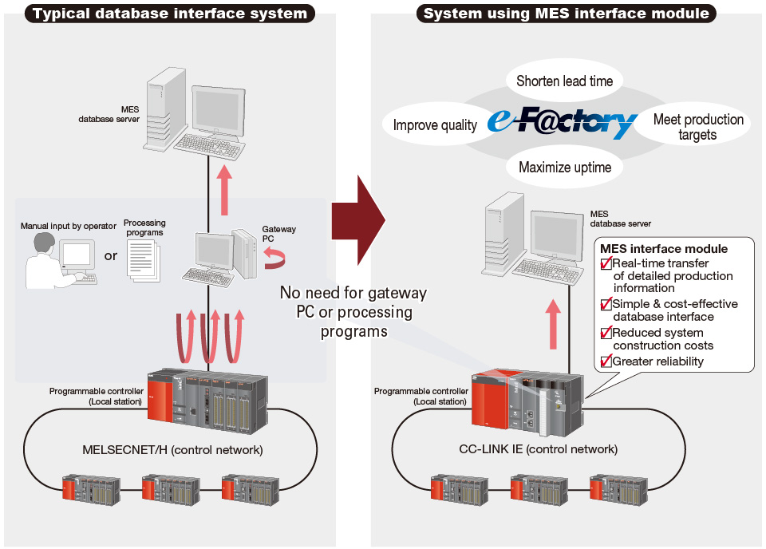

Controllers MELSEC-Q Series
Product features -Network-

MES interface
Make the jump from shop floor data to valuable information in real time
MES interface module
- Simplify the process of connecting to enterprise system databases such as an MES*1 by connecting directly. Configuration of the module is easy and does not require any programming.
- When user-defined trigger conditions occur, the specified data is read and transferred via SQL text. This event-driven communication method reduces network loading when compared to conventional solutions, which are based on polling architecture.
- Executes pre-registered SQL jobs. Also receives production instructions from MES and downloads production information from the database.
- *1.MES (Manufacturing Execution System): A system that manages and controls production activities to optimize quality, production volume, delivery, costs, etc.

e-F@ctory is a solution for manufacturing that is one step ahead of the industry, enabling the overall total cost of development, production and maintenance to be reduced through the utilization of FA and information-processing technologies that continuously support customer improvement activities. The result, increased corporate value for the customer.